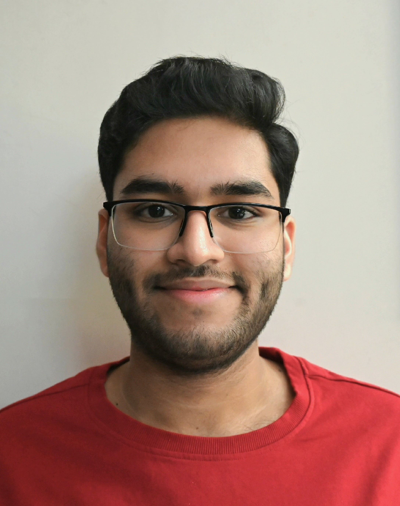

 Hi! I'm Shashwat, a B.Tech CSE student at VIT, Vellore. I am a constant learner who is passionate about coding and actively seeking opportunities to contribute and learn. Driven by ambition, a collaborative spirit, and a passion for creativity, I enjoy working on coding and website designing.
My interests lie in programming-related roles, and I am always excited to explore internships, research, and collaborative projects. Whether it’s solving challenging algorithm problems or creating visually engaging websites, I find immense satisfaction in turning ideas into reality.
Along with technical skills, I firmly believe in the importance of soft skills such as communication, teamwork, and adaptability. I enjoy mentoring peers and sharing knowledge to build a collaborative learning environment. By embracing challenges and maintaining a growth mindset, I aim to carve a meaningful and impactful career in the tech world.